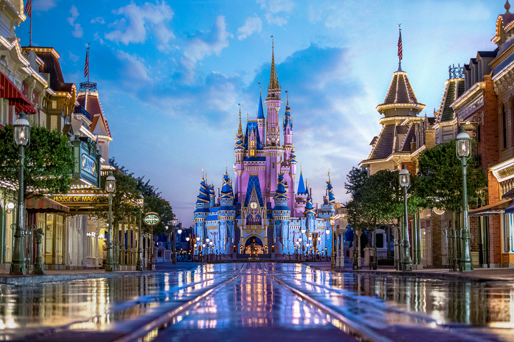

The Most top five Best Places In The Japan
Hiroshima National Park

Location: Hiroshima.
Best Time to Visit: April-May or September-October.
Info: A poignant site commemorating victims of the atomic bomb and promoting world peace.
Mount-Fuji

Location: Honshu Island, near Tokyo.
Best Time to Visit: July-September (climbing season).
Info: Japan’s highest mountain and an iconic natural and cultural landmark.
TOkyo Dinetland

Location: Tokyo.
Best Time to Visit: March-May or September-November.
Info: A magical theme park for families with thrilling rides and parades.
Kinaku ji Japan

Location:SAbo ,Kinkaku-an
Info:
A renowed zen Buddhist temple with centuries of history.It is one of the most pipualar building in Kyoto
Osaka Castle

Location: Osaka.
Best Time to Visit: March-May or October-November.
Info: A historic castle surrounded by beautiful cherry blossoms in spring.